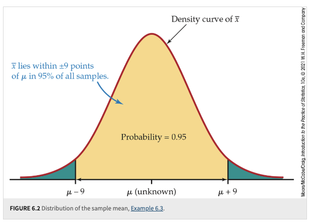
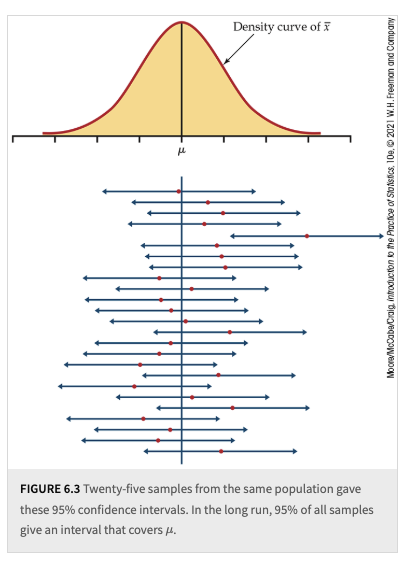
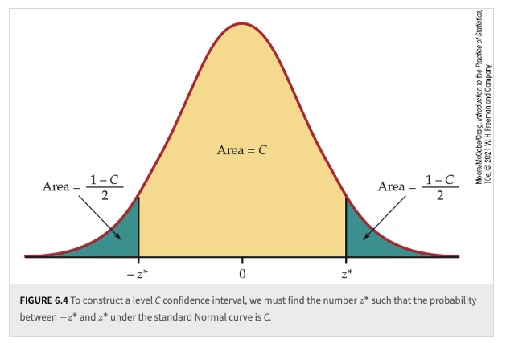
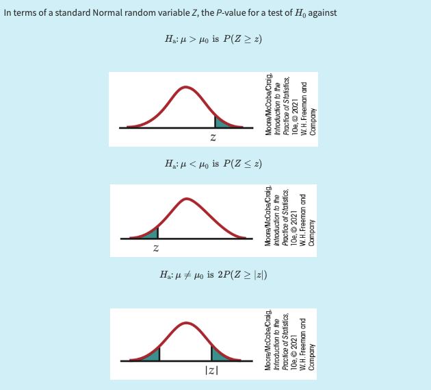

6. Confidence Intervals and Significance Tests#
Textbook reference
This chapter corresponds to Chapter 6 of Introduction to the Practice of Statistics (Moore, McCabe & Craig, 10th ed.). Note that the course chapter numbers (shown in the sidebar) follow our teaching order, which differs from the textbook order.
Learning objectives
After this chapter, you will be able to:
Construct a level \(C\) confidence interval \(\bar{x} \pm z^* \sigma/\sqrt{n}\) for a population mean, and state correctly what the confidence level does — and does not — mean.
Explain how the margin of error responds to changes in confidence level and sample size, and find the sample size needed for a desired margin of error.
Set up the null and alternative hypotheses for a significance test, compute the \(z\) test statistic, and find one-sided and two-sided p-values.
Interpret a p-value correctly, avoid the classic misreadings, and state conclusions in context at a given significance level \(\alpha\).
Distinguish Type I and Type II errors, relate \(\alpha\) to Type I error, and describe the idea of power.
Key concepts at a glance
Estimating with confidence · Tests of significance and p-values · Inference as a decision, error types · Putting it all together
Where are we? A question before we start
Chapter 5 handed us a guarantee about the procedure: \(\bar{x}\) falls within \(2\,\sigma/\sqrt{n}\) of \(\mu\) in about 95% of samples. Useful — but it describes where \(\bar{x}\) lands around a \(\mu\) we don’t know. Now flip it around: if my \(\bar{x}\) is within 2 standard errors of \(\mu\), then \(\mu\) is within 2 standard errors of my \(\bar{x}\). The same distance, read from the other end. So take the one \(\bar{x}\) you actually observed and ask: which values of \(\mu\) are believable, given that most samples land close? That flip — from “where does \(\bar{x}\) fall around \(\mu\)” to “which \(\mu\)’s are compatible with my \(\bar{x}\)” — is the confidence interval, and the same logic run as a challenge (“could \(\mu\) really be \(\mu_0\)?”) is the significance test. This chapter builds both.
Last chapter, we learned that the sampling distribution of the sample mean \(\bar{X}\) is approximately \(\mathcal{N}\left(\mu, \frac{\sigma}{\sqrt{n}}\right)\) under mild conditions, thanks to the Central Limit Theorem (CLT). The mean of this sampling distribution is \(\mu\), making the sample mean \(\bar{X}\) an excellent candidate for a point estimator of the population mean \(\mu\).[1]
However, in reality, we typically only observe one sample, and the sample mean \(\bar{X}\) itself is random. Using our knowledge of the sampling distribution, we want to assess how far the observed \(\bar{x}\) is from the population mean \(\mu\), or equivalently, how far the population mean \(\mu\) might be from our observed \(\bar{x}\). This motivates the need to address uncertainty in our estimates of population parameters.
One effective way to quantify this uncertainty is by constructing a confidence interval, which provides an interval estimate for the population mean. A typical confidence interval for the population mean is expressed as:
and we interpret it as:
“Given the data, we are 95% confident that the true mean \(\mu\) lies within this range.”
The Margin of Error is a calculable value-the half-width of the interval, later given by \(z^* \frac{\sigma}{\sqrt{n}}\)-that quantifies how far the sample mean \(\bar{x}\) typically falls from the true population mean \(\mu\). An important clarification involves two equivalent perspectives when interpreting the range:
We say \(\mu\) lies within the interval \((\bar{x} - \text{Margin of Error}, \bar{x} + \text{Margin of Error})\), or
We equivalently say that \(\bar{x}\) lies within the interval \((\mu - \text{Margin of Error}, \mu + \text{Margin of Error})\). The second perspective arises from our understanding of the sampling distribution and the variability inherent in the sample mean.
Proof. The two statements are logically equivalent.
Claim: The two statements \((\bar{x} - \text{margin} < \mu < \bar{x} + \text{margin}) \text{ and } (\mu - \text{margin} < \bar{x} < \mu + \text{margin})\) are logically equivalent.
Hence the intervals \(\bar{x} \pm \text{margin}\) around \(\mu\) and \(\mu \pm \text{margin}\) around \(\bar{x}\) represent the same set of inequalities.
The first perspective focuses on \(\mu\) (the true population parameter) as the unknown, while the second perspective focuses on \(\bar{x}\) (the sample statistic) as a random variable. Recognizing that these two perspectives are equivalent, we can construct the confidence interval in the first perspective using the knowledge of the sampling distribution from the second perspective. Since we understand the distribution of the sampling statistic, we can make probability claims about the range within which the random variable \(\bar{x}\) would fall if we repeatedly sampled from the population-this range forms the confidence interval.
The probability associated with this range is called the confidence level (e.g., 95%). I will discuss the interpretation of this level in detail in the next section.
For now, I want to briefly introduce a new concept: the Pivot or Pivotal Quantity.
A pivot, such as \(Z = \frac{\bar{X} - \mu}{\sigma / \sqrt{n}}\), is a function of the sample and parameters that has a distribution independent of the unknown parameter. Its distribution remains invariant regardless of the value of \(\mu\). This property allows us to connect the sample statistic and the population parameter with probability statements, as the distribution of the pivot is known even if the parameter values are not.
Designing or identifying appropriate pivots is a non-trivial task, but they are essential tools for statistical inference. In this course, we will encounter several examples of pivotal quantities, each playing a crucial role in hypothesis testing and confidence interval construction.
6.1. Estimating with Confidence#
A question before this section
“The average Purdue height is \(\bar{x} = 67.1\) inches” sounds precise — suspiciously precise. Nobody believes \(\mu\) is exactly 67.1; the honest claim is “67.1, give or take a bit.” But how big, exactly, is ‘a bit’? And how sure are we of it? This section replaces the vague “give or take” with a number that has a guarantee attached: the margin of error, and the confidence level that backs it.
Let’s begin with the simplest case: we are working with the sample mean \(\bar{x}\), and our goal is to construct a confidence interval for the population mean \(\mu\). Additionally, we assume that the population standard deviation \(\sigma\) is known-a scenario that is rarely true in practice.
Using our knowledge of the sampling distribution of sample means, we know that \(\bar{X}\) is approximately distributed as \(\mathcal{N}\left(\mu, \frac{\sigma}{\sqrt{n}}\right)\) under the Central Limit Theorem. Leveraging our understanding of probability and the properties of the normal distribution (such as the 68-95-99.7 rule), we can determine the probability of \(\bar{x}\) falling within specific intervals under the normal density curve.
For example, the 68-95-99.7 rule tells us that 95% of the area under the normal curve lies within 2 standard deviations from the mean. Therefore, if we repeatedly took samples and calculated \(\bar{x}\) for each sample, approximately 95% of these \(\bar{x}\) values would lie within the interval:
This illustrates the second perspective, where we view \(\bar{x}\) as a random variable distributed around the true mean \(\mu\). This perspective allows us to build confidence intervals using probability derived from the sampling distribution.
The figures below illustrate IPS Example 6.3: SAT Math scores with \(\sigma = 100\) and \(n = 500\), so \(2 \cdot \sigma/\sqrt{n} = 8.94 \approx 9\) points.
{kind=link}

Fig. 6.1 Example 6.3#
Now, let’s shift to the first perspective, where our focus is on the population parameter \(\mu\). Given each sample mean \(\bar{x}\), we can construct a confidence interval for \(\mu\) as follows:
We call these 95% confidence intervals for \(\mu\). Since \(\bar{x}\) is a random variable, the confidence interval itself is also random-its endpoints change depending on the sample we obtain.
Interpretation of Confidence Intervals:
In the long run, if we repeatedly take samples and construct confidence intervals using the formula above, approximately 95% of these intervals will contain the true population mean \(\mu\).
However, for any specific confidence interval derived from one sample, we do not know whether that particular interval actually contains \(\mu\).
More importantly, we cannot assign a probability to whether this specific interval covers \(\mu\) or not.
This last point is where many people misinterpret confidence levels-thinking that an individual confidence interval has a 95% probability of containing \(\mu\), when in reality, the probability statement applies to the process, not a single interval.
{kind=link}

Fig. 6.2 Example 6.3, 25 Samples#
How to read this figure (the most misread figure in the course)
Twenty-five samples, twenty-five confidence intervals, stacked as horizontal bars under the sampling distribution of \(\bar{x}\). Read it by sorting every element into “varies” or “fixed”:
What varies (sample to sample): the intervals. Each horizontal bar is one sample’s \(\bar{x} \pm m\) — a new sample gives a new center \(\bar{x}\), so the bar slides left or right. The bars are the random objects in this picture.
What is fixed: \(\mu\) — the single vertical line down the middle. The population mean does not move, does not know about our samples, and is not random. The intervals hunt for \(\mu\); \(\mu\) never hunts for the intervals.
What “95%” counts: the fraction of bars that cross the vertical line, in the long run over repeated samples. In any batch of 25 you’d typically see about 24 hits and 1 miss (a bar lying entirely to one side of \(\mu\)) — but 23 or 25 hits are perfectly possible. The 95% describes the bar-producing procedure, not any single bar.
The trap: in real life you get exactly one bar and the vertical line is invisible. Your bar either crosses \(\mu\) or it doesn’t — there is no 95% left for your bar; the 95% was spent on the method that drew it.
Common misunderstanding
Students often think: “My 95% CI is \((65.5, 68.7)\), so there’s a 95% chance that \(\mu\) is in this interval.”
In fact: \(\mu\) is a fixed number, not a random one — it is either in \((65.5, 68.7)\) or it isn’t; no coin is left to flip. The randomness was in the sampling, and it’s over. The correct reading: this interval was produced by a procedure that captures \(\mu\) in 95% of samples — we are “95% confident” in the method, and this interval is one output of that method.
Quick check: in the 25-intervals figure, pick the one bar that misses \(\mu\). Before you knew it missed, was there “a 95% chance \(\mu\) was inside it”? (No — \(\mu\) was never inside it. Probability statements attach to the repeatable procedure, not to one already-computed interval.)
Of course, we are not limited to a 95% confidence level-we can choose any other confidence level. However, adjusting the confidence level requires modifying our interval. Instead of using:
we replace the value 2 with a more general critical value, denoted as \(z^*\).
Key Observations:
If we increase the confidence level, the value of \(z^*\) becomes larger, resulting in a wider confidence interval.
If the sample size increases, the confidence interval becomes narrower, reflecting increased precision in our estimate.
Determining the Required Sample Size:
If we want to achieve a desired margin of error, denoted as \(m\), while keeping the confidence level fixed, we can solve for the necessary sample size \(n\). Rearranging the margin of error formula, we obtain:
\[n = \left(\frac{z^* \sigma}{m}\right)^2.\]This equation helps us determine the required sample size to achieve a specified margin of error for a given confidence level. Since \(n\) must be a whole number, always round up to the next whole number; rounding down would fail to achieve the desired margin of error.
Definition 6.1 (Confidence Interval for a Population Mean)
Choose an SRS of size \(n\) from a population having unknown mean \(\mu\) and known standard deviation \(\sigma\). The level \(C\) margin of error of \(\bar{x}\) is:
Here, \(z^*\) is the value on the standard Normal curve with area \(C\) between the points \(-z^*\) and \(z^*\). The level \(C\) confidence interval for \(\mu\) is:
The confidence level of this interval is exactly \(C\) when the population distribution is Normal and is approximately \(C\) when \(n\) is large in other cases.
{kind=link}

Fig. 6.3 \(C\) level CI#
Example: a 95% CI for Purdue heights, start to finish
An SRS of \(n = 25\) Purdue students gives \(\bar{x} = 67.1\) inches; take the population standard deviation as known, \(\sigma = 4\) inches.
Critical value: for \(C = 95\%\), \(z^* = 1.960\) (the “2” of the 68–95–99.7 rule, made exact).
Margin of error: \(m = z^* \dfrac{\sigma}{\sqrt{n}} = 1.960 \times \dfrac{4}{\sqrt{25}} = 1.960 \times 0.8 = 1.568\) inches.
Interval: \(\bar{x} \pm m = 67.1 \pm 1.568 = (65.53,\ 68.67)\) inches.
In context: we are 95% confident that the mean height of all Purdue students is between 65.5 and 68.7 inches — where “95% confident” refers to the procedure, as the previous figure made vivid.
Two follow-ups worth doing in your head:
More confidence costs width: at \(C = 99\%\), \(z^* = 2.576\), so \(m = 2.061\) — the interval widens to \((65.04, 69.16)\). Certainty is purchased with vagueness.
More data buys precision: with \(n = 100\) (so \(\sigma/\sqrt{n} = 0.4\)), the 95% margin drops to \(0.784\). To halve the margin, you must quadruple the sample — the \(\sqrt{n}\) tax from Chapter 5, again.
6.2. Tests of Significance#
A question before this section
The die from Chapter 0 comes back. A stranger hands you their die; you roll it 100 times and never see a single 6. For a fair die that has probability \((5/6)^{100} \approx 0.000000012\) — about one in 80 million. Nobody hesitates here: the die is loaded. But suppose instead you saw sixes a bit less often than expected, or an average of the 100 rolls of 3.9 instead of 3.5 — bad luck, or bad die? At what point does “surprising if fair” become “too surprising to believe it’s fair”? A significance test is nothing more than this instinct made precise: assume fairness, compute how surprising your data would then be, and reject fairness when the surprise crosses a preset line.
The second classical statistical method for using sample information to make inferences about the population-generalization-is the hypothesis test. This method is also closely related to the pivotal quantity mentioned earlier. However, in this context, we refer to it as a pivot statistic, test statistic, or observed pivot.
Logic of Hypothesis Testing:
The reasoning behind hypothesis testing can feel counterintuitive because we begin by assuming an explanation for how the dataset is generated. In this framework, we act as if we are the Oracle, knowing the true value of the parameter of interest under the null hypothesis, denoted as \(H_0\).
We assume \(H_0\), which specifies a fixed value for the parameter.
We calculate a test statistic using sample data and the assumed parameter value from \(H_0\).
We evaluate whether the observed test statistic provides sufficient evidence to reject \(H_0\).
A common choice for \(H_0\) represents a “nothing interesting is happening” scenario/a “business as usual” hypothesis, or a hypothesis that we seek to refute using sample data.
Scenario 1: Suppose we are studying the heights of Purdue students and it is generally believed that the average height of Purdue students has historically been 70 inches. The null hypothesis here would reflect the “business as usual” assumption:
Null hypothesis (\(H_0\)): The average height of Purdue students is 70 inches (\(\mu_0 = 70\)).
Scenario 2: A researcher claims that Purdue’s new student population has an average height of at least 72 inches, suggesting a significant increase in height due to some unknown factor (e.g., recruitment policies). Here, the null hypothesis reflects the claim that the researcher tries to refute using data:
Null hypothesis (\(H_0\)): The average height of Purdue students is 72 inches (\(\mu_0 = 72\)), tested against the alternative \(H_a: \mu < 72\). Following the IPS convention, the “at least” part of the claim is absorbed into the direction of \(H_a\), and the boundary value \(\mu_0 = 72\) is used for calculation.
Once we have formed our Null hypothesis, we can form our alternative hypothesis which asserts that a mechanism other than the null hypothesis generated the datasets.
Definition 6.2 (Null Hypothesis)
The statement being tested in a test of significance is called the null hypothesis. The test of significance is designed to assess the strength of the evidence against the null hypothesis. Usually, the null hypothesis is a statement of “no effect” or “no difference.”
We still rely on our knowledge of sampling distributions and pivotal quantities. Here, we substitute the hypothesized parameter value \(\mu_0\) from \(H_0\) (which we assume to be known) into the test statistic formula to calculate the test statistic.
By conditioning on the assumption that the null hypothesis is true, meaning that \(\mu_0\) is the actual population mean, we can determine the probability of obtaining a test statistic as extreme or more extreme than the observed value. This probability is known as the p-value.
Interpreting the p-value:
The p-value represents the probability of observing data as extreme as (or more extreme than) the sample data, given that \(H_0\) is true.
If this probability is small (i.e., the p-value is less than a preset significance level \(\alpha\)), we reject the null hypothesis \(H_0\).
A small p-value suggests evidence against \(H_0\), indicating that the observed data are unlikely under the null hypothesis.
“The p-value is the probability of observing a test statistic as extreme as, or more extreme than, the one computed from your sample data, assuming the null hypothesis is true.”
The p-value is the probability of observing a test statistic as extreme as, or more extreme than, the one computed from your sample data, assuming the null hypothesis is true.
p-value \(\neq\) Probability that \(H_0\) is true
The p-value is conditional on \(H_0\) being true; it does not tell us the probability of \(H_0\) itself.
p-value \(\neq\) Strength of the alternative hypothesis (\(H_a\))
A small p-value means data as extreme as ours would be unlikely if \(H_0\) were true, but it doesn’t measure how true \(H_a\) is.
“Failing to reject \(H_0\)” \(\neq\) Proving \(H_0\)
A high p-value means the data are consistent with \(H_0\), but it doesn’t prove \(H_0\) is correct.
If the p-value is as small or smaller than \(\alpha\), we say that the data are statistically significant at level \(\alpha\).
The formula for the test statistic is as follows:
Recall from Chapter 5 that the standard deviation of the sample mean, \(\bar{x}\), is given by: \(\frac{\sigma}{\sqrt{n}}\)
Therefore, the test statistic becomes:
Then, we can use a z-table to find the probability statements like, \(\mathbb{P}(Z \geq z)\) or \(\mathbb{P}(Z \leq z)\).
{kind=link}

How to read this figure (three curves, three alternatives)
All three curves are the same standard Normal — the distribution of the \(z\) statistic if \(H_0\) is true. What differs is only which region counts as “as extreme or more extreme,” and that is dictated entirely by \(H_a\), which you chose before seeing the data:
Upper-tail curve (\(H_a: \mu > \mu_0\)): the p-value is the shaded area to the right of your observed \(z\). Only large positive \(z\)’s count as evidence.
Lower-tail curve (\(H_a: \mu < \mu_0\)): the shaded area to the left of \(z\). Only large negative \(z\)’s count.
Two-sided curve (\(H_a: \mu \neq \mu_0\)): both tails beyond \(\pm|z|\) are shaded — surprise in either direction counts, so the p-value is twice the one-tail area.
Reading tips: the tick mark on the axis is your \(z\), computed from data; the shaded area is a probability computed under \(H_0\)’s curve. And note what a two-sided test costs: the same \(z = 2.34\) gives \(p = 0.0096\) one-sided but \(p = 0.019\) two-sided. Choosing the alternative after peeking at the data — “the mean came out high, so I’ll test \(\mu > \mu_0\)” — silently halves your p-value and is a classic form of cheating.
A level \(\alpha\) two-sided significance test rejects a hypothesis \(H_0: \mu = \mu_0\) exactly when the value \(\mu_0\) falls outside a level \(1 - \alpha\) confidence interval for \(\mu\).
P-values provide more information than simple reject/not-reject decisions:
P-values are more informative than the reject-or-not result of a level \(\alpha\) test. Beware of placing too much weight on traditional values of \(\alpha\), such as \(\alpha = 0.05\).
Statistical significance does not imply practical significance:
Very small effects can be highly significant (small \(P\)), especially when a test is based on a large sample. A statistically significant effect need not have practical significance.
Always plot the data to display the effect you are seeking and use confidence intervals to estimate the actual values of parameters.
Lack of significance does not mean the null hypothesis (\(H_0\)) is true:
Lack of significance does not imply that \(H_0\) is true, especially when the test has a low probability of detecting an effect (low power).
Significance tests are not always valid:
Faulty data collection, outliers in the data, and testing a hypothesis on the same data that suggested the hypothesis can invalidate a test.
Beware of multiple comparisons:
Many tests run at once will probably produce some significant results by chance alone, even if all the null hypotheses are true.
“If you torture the data long enough, it will confess to anything” (attributed to Ronald Coase) humorously critiques this kind of data-torturing. p-hacking refers to researchers manipulating data or analysis methods to find statistically significant results, often leading to misleading or invalid conclusions.
Example: is the stranger’s die fair? A complete z test
Back to the stranger’s die — this time with a subtler dataset than “no sixes at all.” You roll it \(n = 100\) times and the average of the faces is \(\bar{x} = 3.9\).
Hypotheses. A fair die has mean \(\mu_0 = 3.5\) and standard deviation \(\sigma = 1.708\) (computed in Chapter 5). Before rolling, we had no idea how the die might be loaded — high or low — so the alternative is two-sided: $\(H_0: \mu = 3.5 \qquad \text{vs.} \qquad H_a: \mu \neq 3.5.\)$
Test statistic. Under \(H_0\), the CLT says \(\bar{X} \approx \mathcal{N}\left(3.5,\ \tfrac{1.708}{\sqrt{100}}\right) = \mathcal{N}(3.5,\ 0.171)\). So $\(z = \frac{\bar{x} - \mu_0}{\sigma/\sqrt{n}} = \frac{3.9 - 3.5}{1.708/10} = \frac{0.4}{0.1708} = 2.34.\)$
P-value. Two-sided: \(p = 2\,\mathbb{P}(Z \geq 2.34) = 0.019\).
Conclusion in context. If the die were fair, only about 1.9% of all 100-roll experiments would produce an average this far from 3.5 (in either direction). At \(\alpha = 0.05\), we reject \(H_0\): the data give good evidence that the die is not fair, tilted toward high faces. At the stricter \(\alpha = 0.01\), the same data would not clear the bar — the verdict depends on where we set the line, which is exactly why the p-value itself (0.019) is more informative than “reject/don’t reject.”
Compare the two die stories: “no sixes in 100 rolls” had \(p \approx 0.000000012\) — beyond argument. Here \(p = 0.019\) — suspicious, but a 1-in-50 fluke under fairness is not unthinkable. The p-value is the ruler that puts both on one scale of surprise.
Common misunderstanding
Students often think: “\(p = 0.019\) means there’s a 1.9% chance the null hypothesis is true — so a 98.1% chance the die is loaded.”
In fact: the p-value is computed assuming \(H_0\) is true — it is \(\mathbb{P}(\text{data this extreme} \mid H_0)\), which cannot also be \(\mathbb{P}(H_0 \mid \text{data})\). Those are different conditional probabilities, and frequentist inference treats \(\mu\) as fixed, so “the probability \(H_0\) is true” isn’t even a defined quantity here. The p-value measures how surprising the data are under \(H_0\) — not how probable \(H_0\) is.
Quick check: a friend’s home pregnancy test logic — “only 1% of non-pregnant users get a positive, I got a positive, so there’s a 99% chance I’m pregnant” — makes the same swap. Can you see why the answer also depends on how common pregnancy is among users in the first place? (Swapping \(\mathbb{P}(A \mid B)\) for \(\mathbb{P}(B \mid A)\) ignores the base rate.)
Common misunderstanding
Students often think: “We tested \(H_0\) and got \(p = 0.40\) — not significant. So we’ve shown the null hypothesis is true.”
In fact: failing to reject \(H_0\) means the data are consistent with \(H_0\) — not that \(H_0\) is proved. Absence of evidence is not evidence of absence, especially when the test had little chance of detecting a real effect (low power). Roll the stranger’s die only \(n = 4\) times: almost no loading could ever be detected, so “not significant” would be guaranteed — and meaningless.
Quick check: with \(n = 4\) rolls of a die actually loaded to \(\mu = 3.9\), the standard error is \(1.708/\sqrt{4} = 0.854\) — the true 0.4 shift is less than half a standard error. Would you expect this test to reject a fair-die \(H_0\)? (Almost never. A non-significant result here says more about the tiny sample than about the die. This is why a confidence interval — showing the whole range of believable \(\mu\)’s — beats a bare “not significant.”)
6.3. Inference as a Decision#
A question before this section
You rejected “the die is fair” at \(\alpha = 0.05\) with \(p = 0.019\). But pause: could the die be fair after all — and you just drew a 1-in-50 unlucky sample? Absolutely. And the reverse can happen too: a genuinely loaded die can produce an innocent-looking 100 rolls. Any procedure that turns noisy data into a yes/no verdict will sometimes give the wrong verdict. The question is not whether we can err — we can — but whether we can name the two ways of erring, control their rates, and choose the trade-off deliberately. That is this section.
From the last section, we saw that after conducting a hypothesis test, we must make a binary decision based on the p-value:
Reject \(H_0\)
Fail to reject \(H_0\)
This type of binary decision-making also appears in many important real-life applications. For example, in the court system, a judge must decide whether to reject \(H_0\) (i.e., declare the suspect guilty) or fail to reject \(H_0\) (i.e., maintain the assumption of innocence) based on the available evidence.
The Possibility of Errors:
However, given our understanding of random sampling and sampling distributions, we recognize an inherent limitation in this statistical decision-making process. Even if we follow the hypothesis testing procedure correctly, there is always the possibility of making a wrong decision due to the randomness of the test statistic.
This means that the conclusion we draw from the statistical test might contradict the true state of the population. These discrepancies are known as statistical errors. For example:
Type I Error: Rejecting \(H_0\) when \(H_0\) is actually true.
In court terms: Convicting (finding guilty) someone who is actually innocent.
Due to sheer misfortune, Mother Nature provides you with a rare dataset that yields an unusually extreme test statistic.
\(\mathbb{P}(\text{Type I Error}) = \mathbb{P}(\text{rejecting } H_0 \text{ when } H_0 \text{ is true}) = \mathbb{P}(\text{rejecting } H_0 \mid H_0 \text{ true}) = \alpha\)
Type II Error: Failing to reject \(H_0\) when \(H_0\) is false.
In court terms: Acquitting (finding not guilty) someone who is actually guilty.
You are unlucky, and Mother Nature hands you a dataset that fails to reveal the real effect.
\(\mathbb{P}(\text{Type II Error}) = \mathbb{P}(\text{failing to reject } H_0 \text{ when } H_0 \text{ is false}) = \beta\), and \(1-\beta\) is called the power of the test.
To calculate the probability of a Type II error \(\beta\), we must specify the true value of the parameter under the alternative hypothesis. For instance, if our null hypothesis states \(\mu = \mu_0\), we must assume a particular value \(\mu = \mu_0 + \delta\) (for some \(\delta \neq 0\)) to compute \(\beta\).[2]
Finally, let’s consider a few remarks on the significance-test perspective and the decision-theory perspective for making inferences.
Note
1. Significance Tests (Fisher’s Perspective)
Focus: A single hypothesis \(H_0\) and a single probability (the p-value).
Goal: Assess the strength of evidence against \(H_0\).
Outcome:
If data are sufficiently against \(H_0\), reject \(H_0\).
Otherwise, conclude only that the evidence is insufficient to reject \(H_0\), not that \(H_0\) is actually true.
Note
2. Decision Theory (Neyman-Pearson Perspective)
Focus: Two hypotheses, \(H_0\) and \(H_a\), with both Type I and Type II errors considered.
Decision Rule:
We choose one hypothesis based on the sample, and cannot simply abstain for lack of evidence.
We set \(\alpha\) to control Type I error and strive to minimize Type II error (maximize power).
Common Practice:
State \(H_0\) and \(H_a\).
Treat it as a decision problem, so Type I (\(\alpha\)) and Type II (\(\beta\)) errors matter.
Fix \(\alpha\) such that Type I error probability \(\leq \alpha\).
Among tests meeting the \(\alpha\) criterion, choose one that minimizes \(\beta\) (i.e., maximizes power).
Note
3. Historical Context
Neyman-Pearson framework (1920s-1930s) laid the foundation for decision-oriented hypothesis testing.
Fisher emphasized significance testing (p-values) over rigid decision rules.
The combined approach (“testing hypotheses”) is often seen in modern practice, balancing both:
Significance level (\(\alpha\)) to control Type I error.
Power (\(1-\beta\)) to reduce Type II error.
6.4. Putting It All Together: A Complete Test, the Way You’ll Write It#
Let’s run one problem through the full four-step format that homework and exams expect — with the step most students skip made explicit up front.
Historical records say the average height of Purdue students is 70 inches. You suspect that’s no longer accurate. An SRS of \(n = 25\) current students gives \(\bar{x} = 67.1\) inches; assume heights are approximately Normal with known \(\sigma = 4\) inches. Test at \(\alpha = 0.05\).
Step 0 — Identify the procedure (before any formula). Ask three questions: What parameter? A population mean \(\mu\) (heights are quantitative). How many samples? One. Is \(\sigma\) known? Yes (given as 4). One sample + mean + known \(\sigma\) → the one-sample \(z\) test. This identification step is the whole game later in the course, when \(t\) tests, proportion tests, and two-sample procedures all crowd onto the menu; practice it now while there is only one dish.
Step 1 — Hypotheses. “No longer accurate” gives no direction — taller or shorter would both matter — so the alternative is two-sided:
(Write the hypotheses about \(\mu\), never about \(\bar{x}\) — we already know \(\bar{x} = 67.1\); there is nothing to test about it.)
Step 2 — Conditions. We have an SRS (stated); the population is approximately Normal, so \(\bar{X}\) is exactly Normal even at \(n = 25\); \(\sigma\) is known. The \(z\) procedure applies.
Step 3 — Calculation. Under \(H_0\), \(\bar{X} \sim \mathcal{N}(70,\ 4/\sqrt{25}) = \mathcal{N}(70, 0.8)\).
Step 4 — Conclusion in context. Since \(p = 0.0003 < \alpha = 0.05\), reject \(H_0\). If the mean were still 70 inches, essentially no 25-student samples (about 3 in 10,000) would average this far from 70. The data give very strong evidence that the average height of current Purdue students differs from the historical 70 inches — and the direction of the data says it is lower.
The duality check. Our 95% confidence interval from earlier was \((65.53,\ 68.67)\) — and sure enough, \(70\) lies outside it. A level \(\alpha\) two-sided test rejects \(\mu_0\) exactly when \(\mu_0\) falls outside the level \(1 - \alpha\) interval: the test and the interval are the same mathematics wearing different clothes. The interval actually says more: not just “not 70,” but “the believable values run from about 65.5 to 68.7.”
The chapter in one sentence: Chapter 5’s sampling distribution, read in reverse, answers both inference questions — which \(\mu\)’s are believable (a confidence interval) and is this particular \(\mu_0\) believable (a significance test) — with the p-value measuring surprise under \(H_0\) and \(\alpha\), \(\beta\) naming the two ways our verdict can be wrong.
6.5. Check Your Understanding#
1. Two 95% confidence intervals for mean height are reported: \((65.53, 68.67)\) from \(n = 25\) and \((66.32, 67.88)\) from \(n = 100\) (same \(\bar{x} = 67.1\), \(\sigma = 4\)). A student says the second interval is “more confident.” Fix the language.
Both intervals carry exactly 95% confidence — the same procedure-level guarantee. What the second interval is, is more precise: quadrupling \(n\) halves \(\sigma/\sqrt{n}\) from 0.8 to 0.4, so the margin shrinks from 1.568 to 0.784. Confidence level is chosen; precision is earned with sample size. (To become “more confident” — say 99% — you would widen the interval, not narrow it.)
2. For the stranger’s die (\(p = 0.019\), two-sided), your friend concludes: “There’s a 98.1% probability that the die is loaded.” Give the correct one-sentence interpretation.
Correct version: “If the die were fair, only 1.9% of all 100-roll experiments would give an average at least as far from 3.5 as ours — so the data are quite surprising under fairness, which is evidence against it.” The p-value conditions on \(H_0\); it is not the probability of \(H_0\) (or of \(H_a\)) being true. No probability attaches to “the die is loaded” in this framework — the die either is or isn’t.
3. A campus lab tests a memory supplement on \(n = 6\) students and reports “no significant improvement (\(p = 0.31\)); the supplement does not work.” Name two distinct problems with this conclusion.
First, “not significant” never proves \(H_0\) — the data being consistent with “no effect” is not evidence of no effect. Second, with only 6 subjects the test has very low power: even a genuinely helpful supplement would rarely produce a significant result, so the non-rejection was nearly preordained (a Type II error waiting to happen). Better reporting: give a confidence interval for the improvement — if it spans from “slightly harmful” to “hugely helpful,” the honest conclusion is “this study was too small to tell,” not “it doesn’t work.”